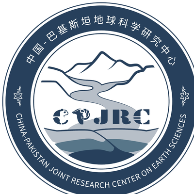

International Training Workshop
Multi-Scale Remote Sensing for Disaster Management
From satellite constellations to UAV systems: an integrated observation chain for emergency response and loss assessment
18–20 November 2026
IGIS, SCEE, NUST · Islamabad
Programme booklet
Welcome
Two scales. One observation chain.
During a monsoon flood, responders need two answers at once: how far has the water spread, and who is affected? Then: which embankments breached, which bridges failed, how many homes are lost?
No single sensing platform can address both. Used in a deliberate sequence, satellites and UAVs create an observation chain far more effective than either alone.
Over two and a half days you will work through that chain, using openly licensed satellite data, browser-based cloud computing and standard commercial UAVs, all reproducible with equipment ordinarily available to a Pakistani institution.
By the close of Day 3 you will have produced
- A flood extent map from Sentinel-1 SAR
- An exposure table of population, cropland and roads
- A UAV orthomosaic and DSM from imagery you helped fly
- A damage assessment quantified from that model
- A rapid situation brief for an emergency operations centre
Programme at a glance
From the wide view to the close-up.
01
Wednesday 18 November · 08:30–17:00
Foundations, wide-area assessment & mission design
Modules 1–3 · Lab 0 · Lab 1A/1B flood mapping and exposure · Lab 2 flight planning
02
Thursday 19 November · 08:30–17:00
Field operations & UAV data processing
Field flights at the NUST field site · Lab 3A photogrammetry · Lab 3B 3D modelling and damage quantification
03
Friday 20 November · 09:00–12:15
Integration, case studies & rapid-response simulation
Module 4 · three Pakistani case studies · capstone simulation · closing and certificates
- 2½
- days
- 15
- contact hours
- 30
- participants
- 4
- expert lecturers
Day 1 · Wednesday 18 November
Foundations & wide-area assessment Morning
- Registration and tea
Badge collection, laptop check and Earth Engine login verification.
- Opening ceremony
Welcome address, inauguration and course objectives.
- Module 1 · Foundations of remote sensing across scales
Passive and active sensing; the resolution quartet; swath versus resolution; what “large-scale” changes; the observation continuum from satellites to ground surveys; Earth observation across the disaster management cycle.
- Module 2 · Data access and international emergency mapping
Sentinel, Landsat, MODIS, VIIRS, GPM IMERG and global DEMs; Analysis-Ready Data; Copernicus Data Space and the Earth Engine catalogue; the International Charter, Copernicus EMS, Sentinel Asia and UN-SPIDER, and how a Pakistani agency requests activation.
- Tea break
- Module 3 · UAV systems, regulation and payloads
UAV system composition; fixed-wing, multirotor and VTOL platforms; optical, multispectral, thermal and LiDAR payloads; regulations, authorities and operating procedures in Pakistan.
- Lunch and prayers
Day 1 · Wednesday 18 November
Mapping the flood & planning the flight Afternoon
- Lab 0 · Environment check
Earth Engine Code Editor orientation, shared scripts, a first run and login troubleshooting. Offline data package for anyone without access.
- Lab 1A · Rapid flood mapping from Sentinel-1 SAR
Pre- and post-event VV imagery, speckle filtering, change-detection ratio and thresholding, terrain masking with slope and HAND. Output: flood extent for the 2022 Sindh floods.
- Tea break
- Lab 1B · Exposure and impact quantification
Flood extent against WorldPop, ESA WorldCover and OpenStreetMap to build a district-wise exposure table; error sources and where they justify an aerial survey.
- Lab 2 · Flight planning and mission design
Area, sensor, overlap, ground sample distance and safety; avoiding restricted airspace; altitude, speed and route generation. Each group plans the mission it flies on Day 2.
- Close of Day 1
Field safety and pre-flight briefing issued.
Day 2 · Thursday 19 November
Field operations & UAV data processing
- Transfer and pre-flight briefing
To the NUST field site. Airspace, weather and safety limits, crew roles and go/no-go; aircraft checks and ground control layout.
- Field practical · UAV flight operations
Supervised stations: manual handling, emergency take-off and landing, return-to-home; the planned mission; orthophoto, oblique and thermal acquisition; GCP survey.
- Data offload and quality check
Coverage, overlap and image quality; flight log; transfer to workstations.
- Lunch and prayers
Return to IGIS.
- Lab 3A · Photogrammetric processing
POS data, pre-processing, alignment, dense reconstruction, DSM and orthomosaic, georeferencing and accuracy.
- Tea break
- Lab 3B · 3D modelling and damage quantification
Oblique modelling; change detection between epochs; landslide displacement; building damage and road length, reconciled with the Lab 1 exposure table.
If weather or airspace prevents flying, a pre-flown reference dataset keeps the labs on schedule.
Day 3 · Friday 20 November · half day
Integration, case studies & rapid response
- Module 4 · Integrating the observation chain
Nested assessment from satellite screening to UAV tasking and ground validation; handover points, authority and latency; uncertainty and defensible figures.
- Applied case studies
Attabad Lake flood risk · Shisper Lake GLOF with HEC-RAS 2D · Jhang riverine flooding, ENSO and the monsoon.
- Tea break
Scenario cards and data packages distributed.
- Capstone · Rapid-response simulation
Six groups, 45 minutes, a four-slide brief: event footprint, exposure table, UAV tasking plan and confidence statement. Scenarios include Dera Ghazi Khan floods, a Hunza GLOF, a Muzaffarabad earthquake, Tharparkar drought, Karachi urban flooding and Sindh reconstruction.
- Communication, summary and closing
Pak-NSDI and data sharing; self-study packages and online clinic; remarks by dignitaries, certificates and group photograph.
- Close
Ahead of Friday congregational prayers.
Learning outcomes
What you’ll be able to do.
- Choose platform, sensor and resolution for a hazard and reporting scale.
- Access free satellite archives and request international emergency mapping.
- Map flood extent from Sentinel-1 SAR and quantify exposure.
- Select a UAV platform and payload against mission requirements.
- Follow Pakistan’s UAV regulations, permissions and flight-safety procedures.
- Plan and fly a survey mission for orthophoto, oblique and thermal data.
- Process imagery to an orthomosaic, a DSM and an oblique 3D model.
- Quantify damage and reconcile it with satellite exposure estimates.
- Design a nested multi-scale workflow with stated uncertainty.
- Deliver a rapid situation brief under time pressure.
Expert lecturers
Your lecturers.
- NYDr. NIE YongProfessor · Institute of Mountain Hazards and Environment (IMHE), CAS
- WWEngr. WANG WenAssistant Engineer · IMHE, CAS
- JIDr. Javed IqbalProfessor · SCEE – IGIS, NUST
Three decades in GIS, remote sensing and hazard mapping of landslides, glacier avalanches and flash floods; 200+ scholarly contributions.
- SKDr. Shahid Nawaz KhanAssistant Professor · SCEE – IGIS, NUST
Explainable machine learning for Earth observation, SAR–optical fusion, Earth Engine and UAV remote sensing; FAA Part 107 remote pilot.
Before you arrive
Come ready to work.
The schedule is compressed, so there is no slack to recover from a failed login on the day.
- Google Earth Engine access registered and verified with a linked Cloud project. Allow 7–10 days.
- Laptop with Google Chrome.
- QGIS 3.34 LTR installed, with 5 GB free disk space.
- UAV ground-station app on a charged phone or tablet, with a cable.
- Field clothing for Day 2: closed-toe shoes, sun protection and a hat.
- Pre-reading pack, circulated two weeks ahead.
- Signed field-safety acknowledgement, handed in at registration.
Venue & contact
Where to find us.
SCEE, NUST Sector H-12, Islamabad 44000
Near the Saddle Club, NUST H-12 · transfer from IGIS at 08:30
NUST_CPJRC_WRKSHP@igis.nust.edu.pk
+92 322 529 2331 · +92 379 375 724
Notes
Jointly organized by
China–Pakistan Joint Research Center on Earth Sciences
Institute of Geographical Information Systems, School of Civil and Environmental Engineering, NUST
nustcpjrcworkshopseries.github.io